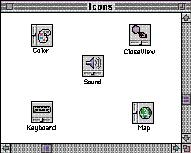
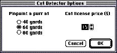

|
Windows and Dialog Boxes |
|
|
The windows and dialog boxes in System 7 are designed for aesthetic consistency across all monitors from black-and-white displays to 8-bit color displays. For display on color monitors, color and shades of gray have been added to the frames of windows and to user controls. The window background remains white on all systems. This updated design takes advantage of the color capabilities of the Macintosh but maintains the consistency of the Macintosh interface. On color screens, the racing stripes in the title bar and the scroll bars are gray. The user controls--close box, size box, zoom box, and scroll box--are colored to make them more apparent. The borders of inactive windows are gray and recede into the background so that the active window's black frame emphasizes its position in front of the other windows. Figure 9-1 shows a colorized window. |
|
Figure 9-1 A
colorized window
 Figure 9-2 shows a dialog box with a colored frame, but black radio buttons and text. Figure 9-2 A colorized movable modal dialog box  |
|
| The standard window definition functions display color windows and dialog boxes. Some control definition functions display in color the window's scroll bars, scroll arrows, scroll box, close box, size box, and zoom box. If you use the standard window definition functions and standard control definition functions, your application's windows will match the appearance of standard windows. If you create your own windows, be compatible with the desktop appearance by using the standard window color table and the guidelines described in this section. Be aware that users can change the colors of windows and dialog boxes by using the Color control panel. If you use the default window color table, you can be sure that the colors you use are consistent with any color that the user has access to with the Color control panel. You can use the Palette Manager to associate a color palette with a window definition. For more information, see the discussion of the Palette Manager in Inside Macintosh. |